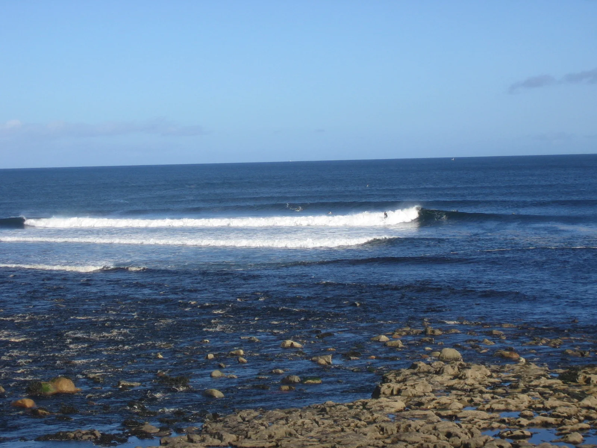

Easkey
Comté de Sligo, Irlande · surf

Village de la côte de Sligo connu pour ses deux vagues de récif, une gauche et une droite, qui déroulent sur des dalles de roche de part et d’autre de l’embouchure de la rivière. Un spot historique du surf irlandais.
- Lieu
- Comté de Sligo, Irlande
- Niveau
- Expert
- Activités
- surf
- Type d'eau
- Mer / océan
- Coordonnées
- 54.29, -8.96 (position approximative du secteur)
Dangers à connaître
- Récif rocheux plat et peu profond.
- Eau froide et houle atlantique puissante en hiver.
Le conseil d'Ocean Buddy
Observe longtemps depuis le rivage près des ruines du château : le récif est plat et peu profond, surtout à marée basse.
Ouvrir dans Ocean Buddy Télécharger sur l'App Store
Source : Fiche Ocean Buddy · septembre 2026 · à vérifier localement.